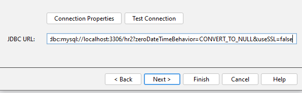
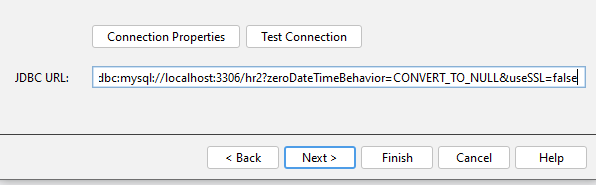

Semestre 5
Implementación de framework
Para la implementación del proyecto se tomo la decisión del manejo del framework Java Server Faces por las siguientes cualidades:
- Mejor manejo en lenguaja tipo java
- Manejo de POO (Programación orientda a objetos)
- Facil manejo de entidades de la base de datos
- Manejo de eventos en la página
- Definir un esquema de navegación
- Es fácil de comprender
- Accesible
JAVA Server Faces - MVC (arquitectura)
Driver
En este paso se empieza realizando la conexión de la base de datos desde la herramienta de Netbeans
Se crea un nuevo Driver previamente descargado en este caso se usa el destinado a MySQL

Ahora colocar las credenciales las cuales se tienen acceso a la base de datos, en este caso es root
En el apartado JDBC se colocar el HOST y el puerto donde está conectado, con el nombre de la base de datos más el parámetro “useSSL=false” y por último se prueba la conexión “TEST CONNECTION”.

Placeholder content for this accordion, which is intended to demonstrate the .accordion-flush class. This is the second item's accordion body. Let's imagine this being filled with some actual content.
Placeholder content for this accordion, which is intended to demonstrate the .accordion-flush class. This is the third item's accordion body. Nothing more exciting happening here in terms of content, but just filling up the space to make it look, at least at first glance, a bit more representative of how this would look in a real-world application.
Driver
En este paso se empieza realizando la conexión de la base de datos desde la herramienta de Netbeans
Se crea un nuevo Driver previamente descargado en este caso se usa el destinado a MySQL
Ahora colocar las credenciales las cuales se tienen acceso a la base de datos, en este caso es root
En el apartado JDBC se colocar el HOST y el puerto donde está conectado, con el nombre de la base de datos más el parámetro “useSSL=false” y por último se prueba la conexión “TEST CONNECTION”.
Placeholder content for this accordion, which is intended to demonstrate the
.accordion-flush class. This is the second item's accordion body. Let's imagine this being filled with some actual content.Placeholder content for this accordion, which is intended to demonstrate the
.accordion-flush class. This is the third item's accordion body. Nothing more exciting happening here in terms of content, but just filling up the space to make it look, at least at first glance, a bit more representative of how this would look in a real-world application.